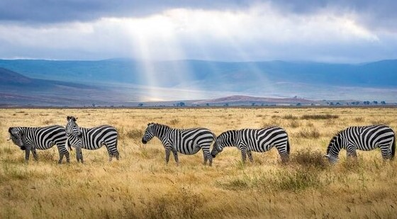
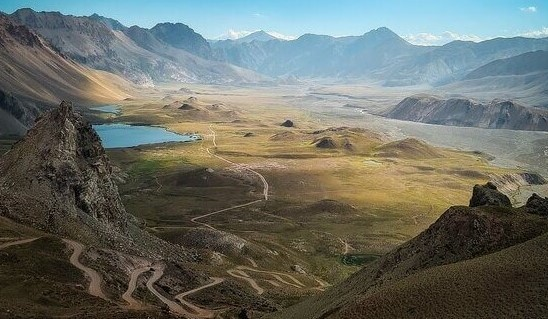

Places
Let us relax together as we explore what nature gave us.
Maasai-Mara
People will get a chance to visit Maasai Mara National reserve to view wildlife. The Maasai Mara National Reserve is located in southern Kenya, close to the border with Tanzania. It is a protected wilderness region consisting of savannah. It is home to a wide variety of wildlife, including lions, cheetahs, elephants, zebras, and hippos. Throughout the course of their yearly migration, wildebeest travel across its plains. The Mara and Talek rivers run through the middle of the terrain, which consists of grassy plains and undulating hills. Maasai people have established a number of settlements, known as enkangs, in the surrounding region.
The Great Rift Valley view point
Will have individuals going to the Great Rift Valley view point. The Great Rift Valley, which traverses the whole of Kenya, had a significant role in the formation of many of the country's most recognizable physical characteristics. This particular region of the world is home to a wide variety of natural landscapes, ranging from arid deserts to precipitous cliffs and lakes bordered with algae, with patches of verdant meadows interspersed throughout. In addition to that, there is an abundant amount of animal life in this Valley.